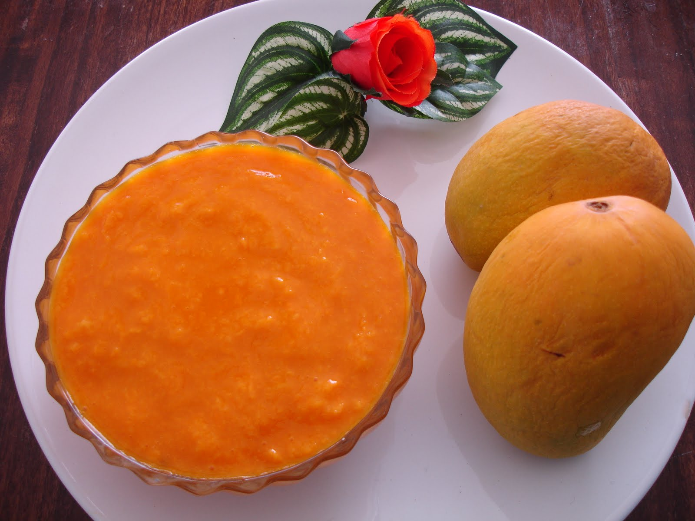

Mangoes - 2
Sugar – as needed
Cream/Milk – 2-3 tbsp (optional)
Cardamom - 1
Saffron/ Chopped nuts – for garnish
Wash and peel the mangoes. Chop the flesh into small pieces.
Take these pieces into a blender or a mixie jar. Add some cream, cardamom and required sugar. Add sugar depending on the sweetness of the mangoes.
Blend it to a smooth puree.
Remove the puree into a serving dish. Garnish with chopped nuts or saffron strands.
Chill it for 1-2 hours before serving.